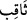
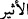

” nur ve çevresine saçtığı ışıkla üzerine düşen şeyi delip geçen ışık demektir. Yani
bu ışık ve alev kütlesi çevresini öyle aydınlatıcıdır ki sanki aydınlığı ile havayı ve
atmosferi delip kulak hırsızlığı yapmak için yükselen şeytanları kovmaktadır.
İbn Abbas (r.a.)’dan rivayet edildiğine göre o der ki: “Bir ara Hz. Peygamber (s.a.),
sahabeden bir grupla birlikte oturuyordu. Ansızın bir yıldız ışık saçıverdi ve ortalık
aydınlandı. Hz. Peygamber (s.a.) ashabına ‘Siz câhilliye döneminde buna ne
diyordunuz?’ diye sordu. Ashâb-ı kirâm: ‘Büyük bir insanın doğacağı yahut öleceği
şeklinde yorumluyorduk’ dediler. Hz. Peygamber (s.a.): ‘Bu ışık herhangi birinin
doğumu yahut ölümünden dolayı atılmaz. Ancak Allah Teâlâ bir işe hükmettiği zaman
arşı taşıyan melekler ile yedinci kat semadaki melekler Allah’ı tesbih ederler. Yedinci
kat semadaki melekler arşı taşıyan meleklere ‘Rabbiniz ne buyurdu?’ diye sorarlar. Arşı
taşıyanlar da durumu onlara haber verirler. Böylece her kattaki gök ehli melekler bu
haberi sorup öğrenirler. Sonunda haber birinci kat semaya ulaşır. Bu sırada cinler ve
şeytanlar bu konuşmalardan bir şeyler kapıp kaçarlar. İşte bu yıldızdan kopan meşâleler
şeytanları kovalarlar. Bu cin ve şeytanların meleklerden duyup aynen getirdikleri hak ve
doğrudur. Bu habere bir çok ilaveler yapar ve yalan söylerler. Onların söylediklerinin
doğru olanları meleklerden işittikleridir. Yalan olanlar ise kendi ilaveleridir. Bu
durumun aynı şekilde câhiliyye döneminde olduğu da söylenmiştir. Ancak Hz.
Peygamber (s.a.)’in gönderilmesinden sonra tedbir ve engeller artırılmıştır.
Denilir ki şeytanların kulak hırsızlığı yapmaları şöyle olurdu. Şeytanlar birbirlerinin
sırtına biner böylece birinci kat semaya yükselirlerdi. En üstteki şeytan meleklerden
duyduğu sözü bir alttakine iletir ve böylece o söz kahin ve falcıya ulaşırdı. İşte bu
esnada yıldızdan fırlatılan kıvılcımlara hedef olurlardı. Yıldızdan gelen bu atış hiç
şaşmaz ve tam isabet ederdi. Bu durumda hedef olanlardan bazıları ölür; bazılarının bir
takım uzuv ve organları yanar; bazılarının da aklı giderdi. Bazen çaldığı bu sözü
aktarmadan bu delici ışık ona yetişir; bazen de ışık gelmeden sözü aktarabilirlerdi.
Yıldızdan kopan bu delici ışığa bazen hedef olup bazen de kurtuldukları için bu
hırsızlıktan tamamen vazgeçmezlerdi. Bunların hali ticaret için deniz ve gemi yolculuğu
yapan gibidir. Bu kişi bazen dalga ve fırtınaya yakalanır, alabora olur; bazen de fırtına
olmaz. Bundan dolayı her defasında sahile selâmetle çıkacağı ümidiyle yine deniz yolu
ve gemi ticaretine döner.
“Şeytan zaten ateştendir, yıldızdan çıkan delici ışık ve kıvılcımla yanmaz” denemez.
İnsan halis topraktan olmadığı gibi şeytan da halis ateşten değildir. Kaldı ki kuvvetli
ateş zayıf ateşe galebe çalıp üstün gelince onu yok eder. Sonra bu delici ışıktan
kastedilen yıldızdan ayrılan bir ateş şulesidir. Bizzat yıldızın kendisi değildir. Çünkü
yıldız kendi yörüngesinde yerleşik bir haldedir.
Filozoflar der ki, bu ışıklar buharların yükselip felekte (yörüngede) ateşte
birleşmesiyle havada meydana gelen ateş molekülleridir.
Hakikat ehlinden bazı büyükler der ki, yerle gök arasında bulunan esîr (kâinattaki
bütün boşlukları doldurduğu farz edilen, görülemeyen ve ağırlığı olmayan madde) (
)